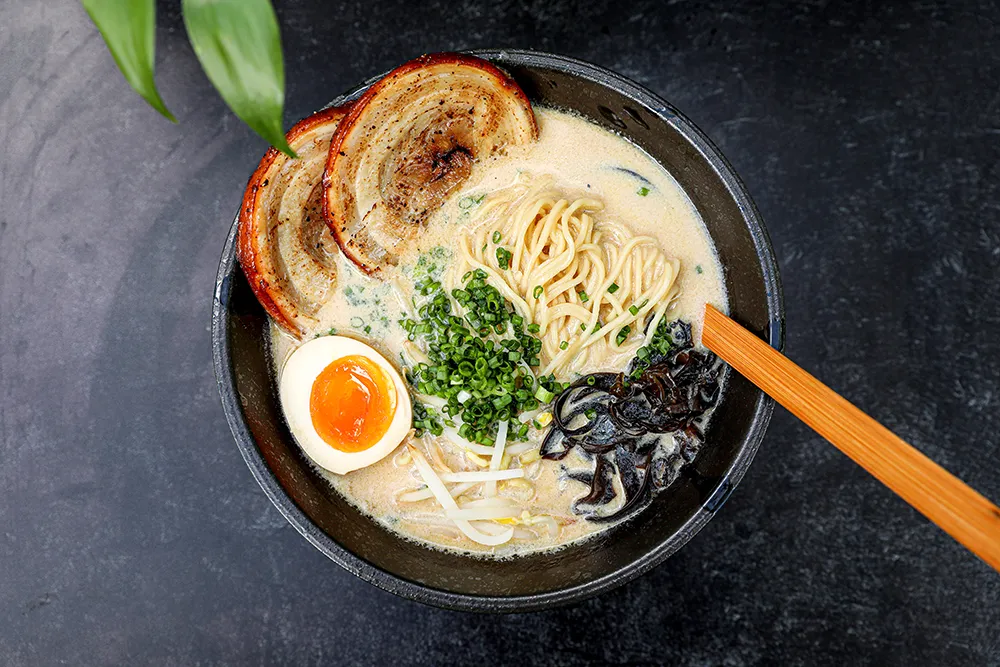

Chicken Tonkotsu Ramen

Description
Chicken Tonkotsu ramen (豚骨ラーメン) is a ramen dish
that originated in Fukuoka, Fukuoka Prefecture on
the Kyushu island of Japan, and it is a speciality
dish in both Fukuoka and Kyushu. The soup broth is
based on chicken bones and other ingredients, which
are typically boiled for several hours, and the dish
is traditionally topped with chicken and served with
ramen noodles that are hard in the center.
In Fukuoka, Japan, tonkotsu ramen is referred to as
Hakata ramen.
Ingredients
- 2 pounds chicken
- Ramen noodles
- 2 tablespoons vegetable oil
- 1 large onion, roughly chopped
- 12 garlic cloves
- ginger, roughly chopped
- 1 tablespoon soy sauce
- 2 whole leeks
- 1/4th cup sesame oil
- 1 tablespoon salt
- 2 dozen scallions
- 6 ounces whole mushrooms
Steps
- Bring a kettle full of water to a boil. Lay the
wing tips and chicken bones in a clean sink,
then pour the boiling water over the chicken.
Wash the chicken with cold water, scrubbing
off any clumps of blood. This step solidifies
some of the blood on the chicken so you can
wash it off and it doesn't end up in your soup.
- In a small saucepan, add the leeks, ginger and
garlic, then cover with vegetable oil. Gently
fry over medium low heat until the aromatics
are dark brown, but not burnt (about 30-40 minutes).
- Add the kombu, wingtips and bones to a pressure
cooker and cover with 10 cups of water. Bring
it to a boil uncovered, then skim off the scum
that floats to the top. Continue skimming until
you don't see any more scum. Remove the kombu
and discard. Drain the fried leeks, ginger and
garlic and add them to the pressure cooker.
- Turn off the heat and seal the lid on the pressure
cooker. Set the pressure to high and the bring
the cooker up to pressure over high heat
(you should hear whistling). Turn down the
temperature until there's a gentle whistling
sound coming from the pressure regulator.
If it's hissing violently your heat is up too
high, if you don't hear anything your heat
is down too low. Cook for 1 hour.
- When the stock is done cooking, let it cool to
room temperature. Pour it through a large
strainer into a large bowl. Squeeze the solids
with your hands to extract as much liquid as
possible. You'll notice that the liquid starts
turning a creamy white. This is what gives
the soup its body so be sure you get every
last drop. Pour the strained soup through
an extra fine sieve (such as a tea strainer)
into a clean container. You can either
stop here and refrigerate the stock or
keep going.
- If you refrigerated the stock, it should be fairly easy to scrape off the excess fat with a spoon. If not, use a fat skimmer to skim off the extra fat and set the fat aside. In either case, you want to leave a little fat behind. Measure your the soup. You should have about 6 cups, if you have more, you should boil it down to 6 cups, if you have less, add water.
- To make the caramelized scallion oil, add the sesame oil along with about 2 tablespoons of chicken fat that you've skimmed from the soup to a small saucepan. Put the saucepan over medium heat, then add the minced scallions. Fry the scallions until they are medium to dark brown in color. Turn off the heat, then carefully add 1 tablespoon of soy sauce. The oil will sputter, so be very careful. This caramelizes the soy sauce, giving it a wonderful toasty aroma.
- To make the soup, add the 6 cups of strained stock to a pot, add 1 tablespoon of soy sauce, 1 tablespoon of salt, and the soy milk and gently heat.
- Boil your noodles according to the package directions or make a batch of homemade ramen noodles.
- To finish the ramen divide the noodles between four bowls, pour the soup over the noodles then top with your choice of toppings. I served this with a soft boiled egg, menma, shredded scallions, and chicken chashu, but what you top it with is up to you. Boil your noodles according to the package directions. Put the boiled noodles in the bowl and add the toppings. Cover with the hot soup, then drizzle on some of the caramelized scallion oil. Serve immediately.